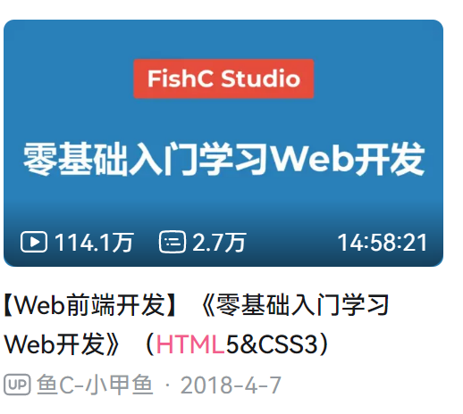
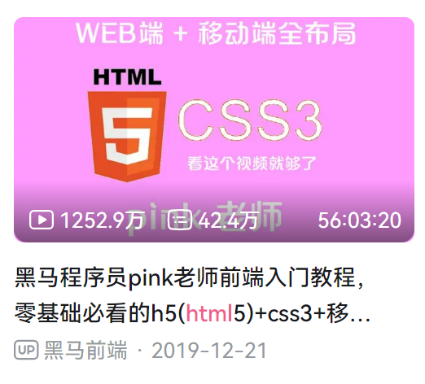
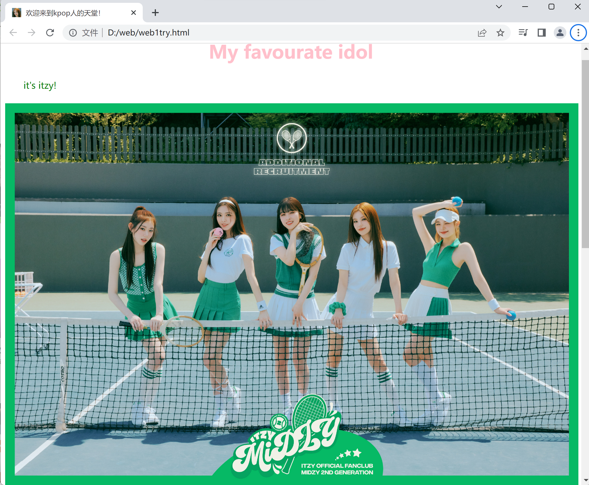
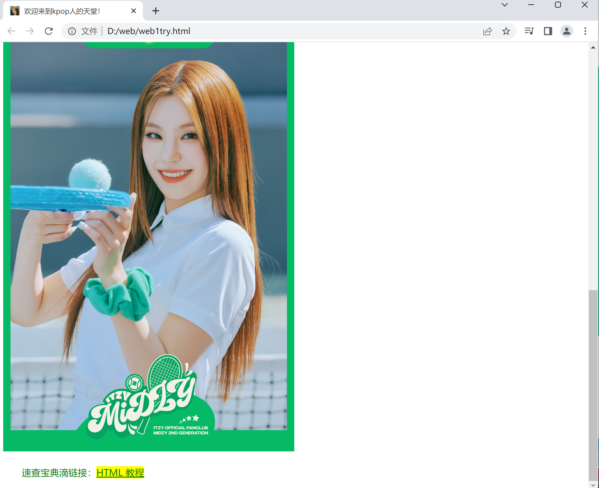
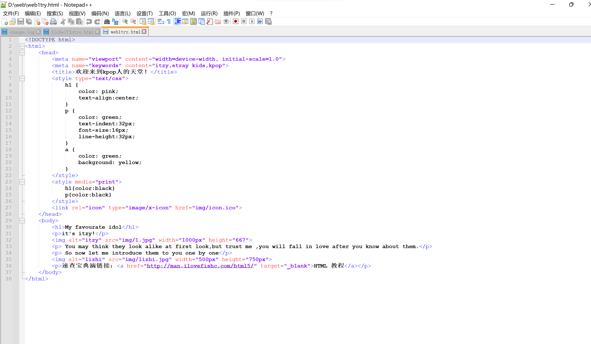
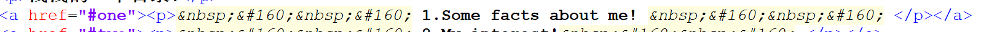
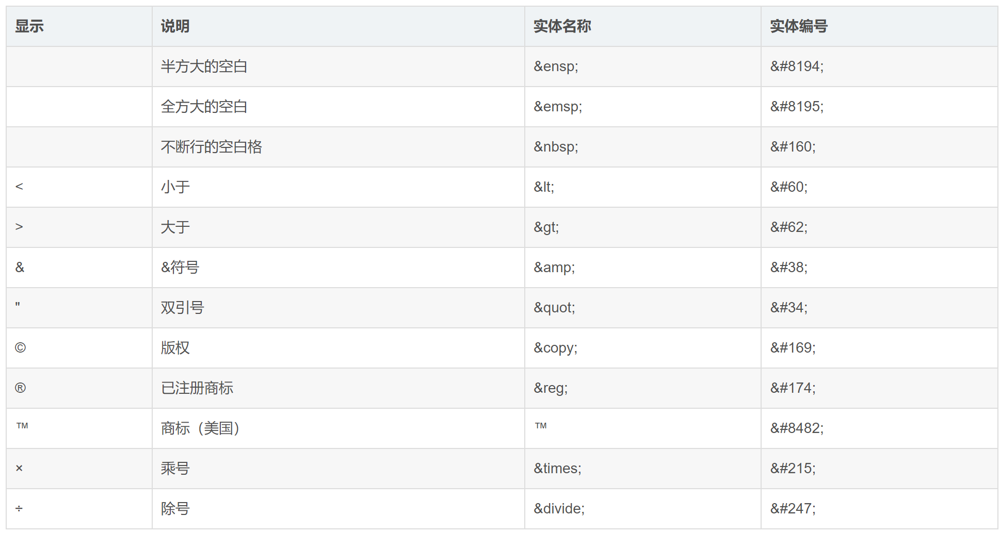
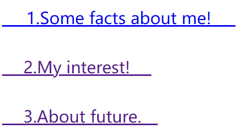
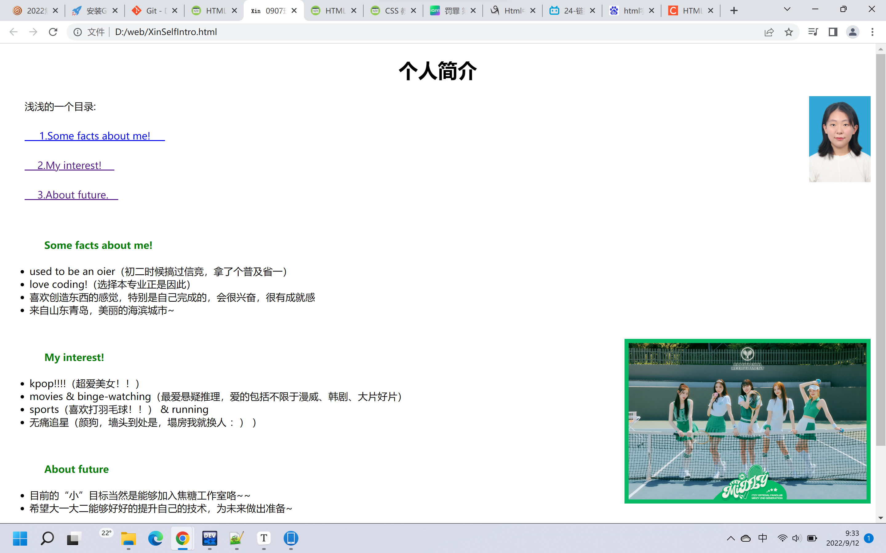
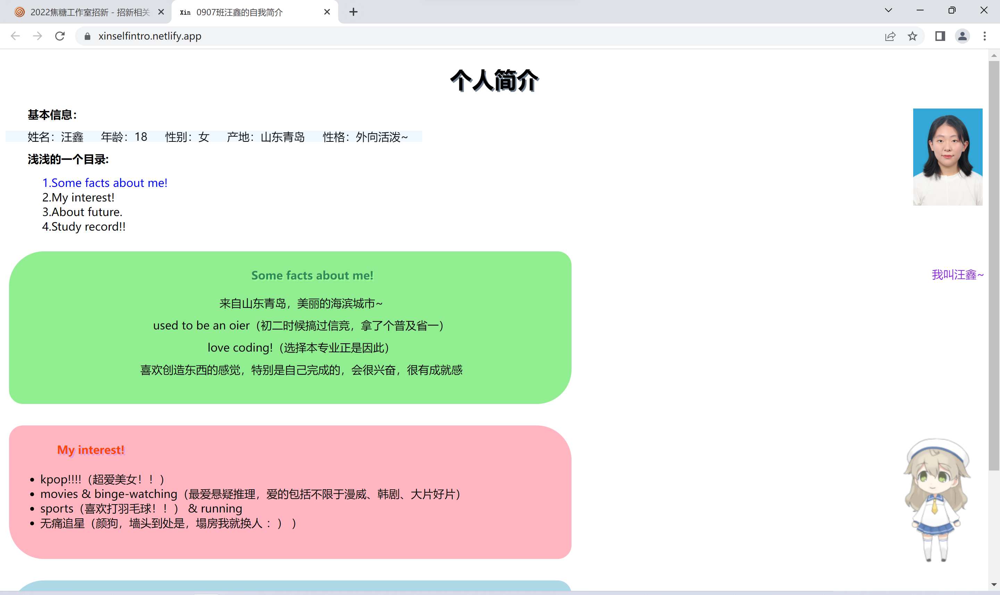

1.了解了HTML、CSS、JavaScript
先使用b站大学搜索入门
 通过小甲鱼和pink老师 认真而优秀 的讲解大概了解了三者， 并且初识网页代码的样子，还有了自己的first try： （夹带私货！我爱的美女们）
 照着教程一点点打来的尝试代码：
不得不说真的很有成就感欸，看到代码变成网页，真的很爽！
2.根据焦糖招新任务一进行深入的学习和实践
①学习
在这个阶段学到了很多新的知识，在下面浅浅列举：
- a href="" anchor锚，用于链接，不仅可以链接到其他网页，还可链接到网页的不同位置！ 
- 空格等字符的网页显示：需要使用特定滴“代号”，且要写分号！ 
<a href="#one"><p> 1.Some facts about me! </p></a>
<a href="#two"><p> 2.My interest! </p></a>
<a href="#thr"><p> 3.About future. </p></a><br>
try1try结果:

< img src="img/1.jpg" alt="看不到就算啦！" align="right" title="最爱的kpop女团" width="400px" height="268px" />

②此阶段滴成品自我介绍：
关于任务一的学习记录部分
感觉直接把记录的markdown复制粘贴上没啥太大的意思，也不好看，所以就决定先学习css并进一步学习html，并在学习中制作排版更加和谐精美的学习记录
css学习实践
| 具体学习内容 | 实践 | |
|---|---|---|
| CSS文本 | 修改文本颜色、修改文本的对齐方式、去除超链接下划线、文字装饰、缩进 | √ |
| CSS边框 | 边框颜色、样式、圆角 | √ |
| CSS定位 | 固定、相对位置、粘性定位 | √ |
| 改变光标 | 各种奇奇怪怪的光标显示法！太有意思了简直 | √ |
| CSS链接 | 改变链接的背景颜色、点击前时后的颜色、改变链接样式 | √ |
| (乱入) | 看到人家博客右下会动滴小人真滴超心动，于是疯狂搜索找代码 | √ |
| CSS布局 | 居中、左右 | √ |
so这个阶段滴小成果：
selfintro网站地址：点我去网址
(部署了好几天【枯】老是不显示，我还以为我的操作出了什么问题，在百度上疯狂搜索也没解决，最后看一个b站教程试着改了一下github里面.html的名称为index！居然成功了，真的超开心！！)
代码：点我去看代码
网页代码：
<!DOCTYPE html>
<html>
<head>
<meta charset="UTF-8">
<title>0907班汪鑫的自我简介</title>
<link rel="icon" type="image/x-icon" href="img/me.ico">
<style type="text/css">
h1{
text-align:center;
text-shadow:2px 2px #708090;
}
h2{
text-indent:64px;
font-size:16px;
line-height:32px;
<!--text-align:center;color: green;-->
}
p {
text-indent:32px;
font-size:16px;
line-height:16px;
}
p.pos_fixed
{
position:fixed;
top:300px;
right:5px;
color:#8A2BE2
}
p.thick {font-weight:bold;}
a {text-decoration:none;}
img{z-index:1;}
</style>
<style type="text/css">
.marked1 {
background-color:#90EE90;
width: 800px;
padding: 5px;
margin: 5px;
border-radius: 50px 20px;
text-align: center;
}
.marked2 {
background-color:#FFB6C1;
width: 800px;
padding: 5px;
margin: 5px;
border-radius: 20px 50px;
}
.marked3 {
background-color:#ADD8E6;
width: 800px;
padding: 5px;
margin: 5px;
border-radius: 50px 20px;
}
.head1{
color: #2E8B57;
text-shadow:2px 2px #98FB98;
}
.head2{
color: #FF4500;
text-shadow:2px 2px #DDA0DD;
}
.head3{
color: #4169E1;
text-shadow:2px 2px #AFEEEE;
}
div.stick{
position:-webkit-sticky;
position:sticky;
top:0;
background-color: #F0F8FF;
width:600px;
}
</style>
<style>
a:link {color:#000000;}
a:visited {color:#0000FF;}
a:active {color:#DC143C;}
a.onea:hover {text-decoration:underline;}
a.twoa:hover {background-color:pink;}
a.foura:hover {font-size:150%;}
a.thra:hovor {color:#FF00FF;}
</style>
</head>
<body>
<script src="https://eqcn.ajz.miesnfu.com/wp-content/plugins/wp-3d-pony/live2dw/lib/L2Dwidget.min.js"></script>
<script>
L2Dwidget.init({
"model": {
jsonPath: "https://unpkg.com/live2d-widget-model-koharu@1.0.5/assets/koharu.model.json",
"scale": 1
},
"display": {
"position": "right", //看板娘的表现位置
"width": 75, //小萝莉的宽度
"height": 150, //小萝莉的高度
"hOffset": 0,
"vOffset": -20
},
"mobile": {
"show": true,
"scale": 0.5
},
"react": {
"opacityDefault": 0.7,
"opacityOnHover": 0.2
}
});
</script>
<h1>个人简介</h1>
<img src="img/zhengjian.jpg" alt="看不到就算啦！" align="right" style="cursor:progress" title="浅p过的证件照一张" width="100px" height="140px" />
<p class="pos_fixed">我叫汪鑫~</p>
<p class="thick">基本信息： </p>
<div class="stick">
<p>姓名：汪鑫 年龄：18 性别：女 产地：山东青岛 性格：外向活泼~</p>
</div>
<p class="thick">浅浅的一个目录:</p>
<a href="#one" class="onea"> 1.Some facts about me! </a><br>
<a href="#two" class="twoa"> 2.My interest! </a><br>
<a href="#thr" class="thra"> 3.About future. </a><br>
<a href="#four" class="foura"> 4.Study record!! </a><br><br>
<div class="marked1">
<h2 id="one" class="head1"> Some facts about me!</h2>
<p>来自山东青岛，美丽的海滨城市~</p>
<p>used to be an oier（初二时候搞过信竞，拿了个普及省一）</p>
<p>love coding!（选择本专业正是因此）</p>
<p>喜欢创造东西的感觉，特别是自己完成的，会很兴奋，很有成就感</p>
<br>
</div><br>
<!--<img src="img/1.jpg" alt="看不到就算啦！" align="right" title="最爱的kpop女团" width="400px" height="268px" />-->
<div class="marked2">
<h2 id="two" class="head2"> My interest!</h2>
<ul>
<li>kpop!!!!（超爱美女！！）</li>
<li>movies & binge-watching（最爱悬疑推理，爱的包括不限于漫威、韩剧、大片好片）</li>
<li>sports（喜欢打羽毛球！！） & running </li>
<li>无痛追星（颜狗，墙头到处是，塌房我就换人 ：） ）</li>
</ul><br>
</div><br>
<div class="marked3">
<h2 id="thr" class="head3"> About future</h2>
<p>目前的“小”目标当然是能够加入焦糖工作室咯~~</p>
<p>希望大一大二能够好好的提升自己的技术，提升自己的绩点，为未来做出准备~</p>
<p>冲击保研，努力保外高校/冲击大厂，拿到心仪offer</p>
<br>
</div><br>
</body>
</html>